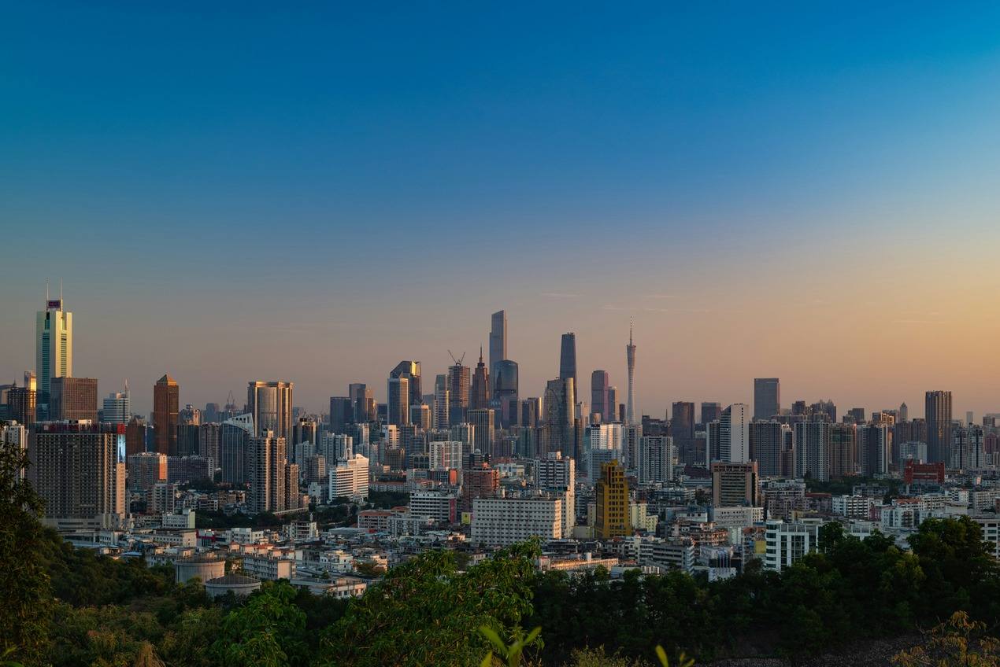

https://images.unsplash.com/photo-1637762203100-1f274ace58d3?q=80&w=2669&auto=format&fit=crop&ixlib=rb-4.1.0&ixid=M3wxMjA3fDB8MHxwaG90by1wYWdlfHx8fGVufDB8fHx8fA%3D%3D
Guangzhou ist eine wichtige Hafenstadt und auch eine bekannte alte Kulturstadt Chinas. Schon in der Qin-Zeit war Guangzhou der Regierungssitz der Präfektur Nanhai. Sie ist die erste nach außen geöffnete Küstenstadt Chinas. Die weltbekannte Guangzhou-Exportwarenmesse findet zweimal jährlich statt.